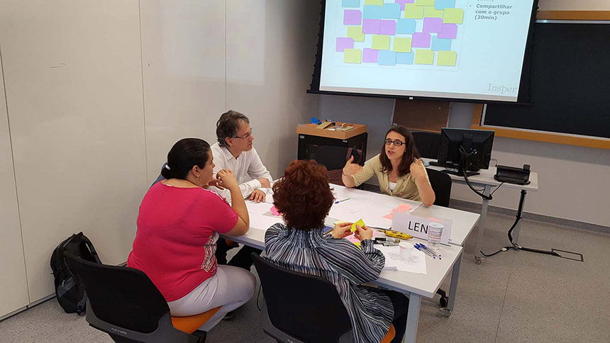
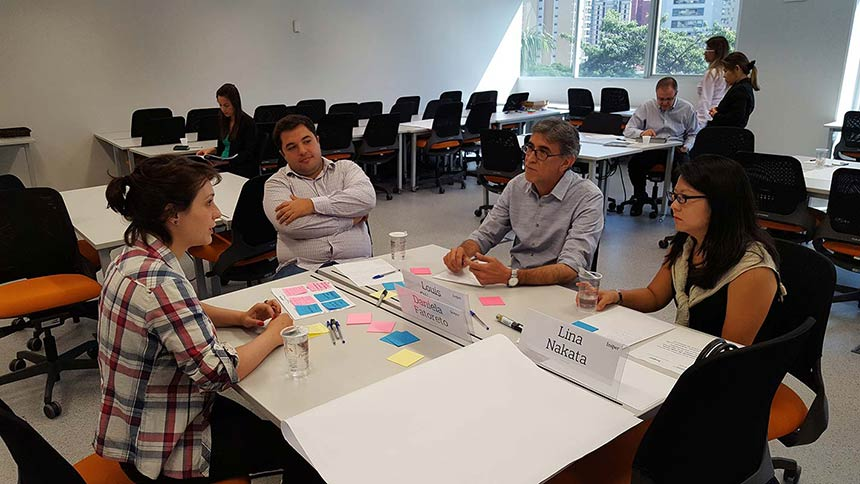
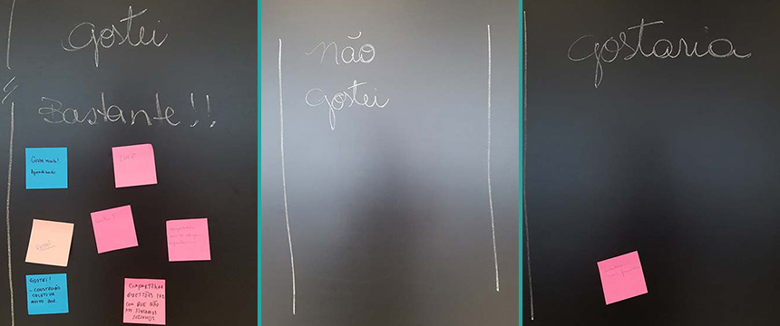

Workshop de Professores da Graduação – Insper
DEA - Desenvolvimento de Ensino e Aprendizagem
03/04/2017, das 9h às 12h
Ao final de um semestre letivo, quais aspectos descreveriam uma experiência positiva de Ensino e Aprendizagem no Insper?
Esta pergunta foi o ponto de partida do Workshop, voltado aos professores da Graduação e realizado no dia 03 de abril de 2017.
O tema “Princípios Integradores da Graduação” foi proposto pela Coordenação da Graduação como continuidade a um trabalho que já vem sendo realizado pelo Núcleo Docente Estruturante (NDE) e coordenado pelos docentes Luciana Ferreira e Guilherme Fowler.
A dinâmica desse Workshop foi inspirada nas dinâmicas adotadas pelos docentes Luciana Ferreira e Guilherme Fowler quando das reuniões de NDE. Com as orientações de Carolina da Costa, o workshop foi conduzido por Juliana Massi, do DEA. Carolina da Costa e Luciana Yeung estiveram presentes durante toda a dinâmica, acompanhando as discussões dos professores. Luciana Ferreira acompanhou a apresentação final dos resultados obtidos e fez o fechamento da dinâmica, com apoio de Carolina da Costa, que fechou o Workshop.
A presença dos professores foi facultativa em virtude da semana de provas e pelo fato de muitos terem compromissos no mesmo horário, dentre aulas e horário de atendimento no próprio Insper, e atividades externas. Além disso, os docentes que integram o NDE foram orientados a não participarem.
Dinâmica do Workshop
Carolina da Costa abriu a formação apresentando o objetivo do Workshop e o contexto no qual ele se insere:
Identificar aspectos que servirão de base para explorar oportunidades de integração dos diferentes cursos da Graduação.
A ideia do Workshop surgiu a partir de um trabalho que vem sendo realizado pelo Núcleo Docente Estruturante (NDE) e que consiste em identificar os chamados “Princípios Integradores da Graduação”. Para isso, o grupo tem se reunido desde o final de 2016, conforme documentação dos encontros:
A proposta do Workshop, então, foi replicar a dinâmica vivenciada pelo NDE em busca dos Princípios Norteadores da Graduação e comparar os resultados com aqueles obtidos pelo NDE.
Para isso, os oito professores presentes foram divididos em dois grupos, de modo que cada grupo tivesse a representação do maior número de cursos. Os grupos foram:
Grupo1
Barbara Suzuki, Camila Campos, Fernando Leite e Leni Hidalgo.
Grupo2
Daniela Fatoreto, Lina Nakata, Louis de Oliveira e Renan Pieri
Após a introdução da proposta, Juliana Massi assumiu a dinâmica do Workshop e orientou os grupos nas seguintes atividades:
1ª FASE | Discussão em grupos mistos
- Cada docente respondeu individualmente à pergunta seguinte, registrando em pos-tit: "Ao final de um semestre letivo, quais aspectos descreveriam uma experiência positiva de Ensino e Aprendizagem no Insper?".
- Os docentes compartilharam suas respostas com o grupo.
2ª FASE | Categorização das ideias
- A partir das respostas de todos os professores, os grupos eliminaram redundâncias e agruparam os aspectos semelhantes.
- Cada grupo de aspectos foi nomeado.
- Os grupos compartilharam os resultados.
Resultado Grupo1
Resultado Grupo2
3ª FASE | Comparação NDE Integrado
- Luciana Ferreira recuperou o histórico do trabalho do NDE e apresentou os resultados alcançados.
Conjunto 1
Método
Assessment
Avaliação e Gestão do Aprendizado
- Interações e avaliação de alto nível cognitivo
- Feedback contínuo
- Evidência da evolução do aprendizado
- Aprovação coerente com o aprendizado esperado
Conjunto 2
Relacionamento
Relação Aluno-Professor
Relação Aluno-Professor-Escola
- Professor melhorou, melhorou o curso, professor foi versátil na condução das aulas
- Reconhecimento do aluno em relação ao professor
- Bom relacionamento aluno/professor
Conjunto 3
Aluno
Perfil do Aluno
Motivação do Aluno
Disposição e Atitude
- Aluno demonstra curiosidade intelectual
- Empatia entre os alunos e o conteúdo
- Autorregulação - Envolvimento dos alunos - Projetos de qualidade
- Aluno adquire uma visão de mundo ampliada
- Amadurecimento do aluno (mesmo que no longo prazo)
- Engajamento do aluno, mesmo já tendo passado
- A partir da comparação entre os aspectos levantados pelo NDE e os aspectos levantados pelos grupos, teve início uma discussão no qual os seguintes pontos foram levantados:
Experimentações e compartilhamento
- “Logística” de avaliações
- Efetividade da semana de provas
- Avaliação integrada?
- Necessidade de repensar turmas grandes
- Grupos para testar novos instrumentos de avaliação (“Núcleo de Experimentação”)
- Como validar de forma institucional esses novos instrumentos de avaliação?
- Se estamos discutindo princípios norteadores, buscar formas específicas por curso/disciplina não desintegra?
- Tecnologias podem ajudar no feedback?
- Professores experimentando coisas com o DEA
- Compartilhar práticas
Interação
- Relação da escola com os pais
- Omissão da família - a escola recebe esse problema
- Como tangibilizar a relação aluno-professor?
- O que fazer quando essa relação extrapola a sala de aula?
- Quais as ações quando extrapolar para as mídias sociais?
- Relações poder/liberdade e poder/hierarquia
- Regras são importantes e devem ser colocadas, independentemente da avaliação
- Os contratos devem ficar claros desde o início
- Dilemas para as relações de liderança
Engajamento
- O que o professor precisa fazer para engajar o aluno?
- Engajamento é um problema maior na Graduação, tendo em vista o momento de vida do aluno
Feedback dos Participantes
Ao final do Workshop, os professores declararam em post-its o que gostaram, não gostaram e gostariam em relação ao encontro.
| Gostei | Não Gostei | Gostaria |
|
Like Compartilhar com os colegas experiências Gostei Compartilhar questões faz com que não nos sintamos sozinhos Gostei Gostei muito! Aprendizado Gostei! Construção coletiva muito boa |
Encontros mais frequentes |
Detalhes
Professores Participantes
Dentre 125 convidados, 15 confirmaram presença, dentre os quais 8 compareceram ao Workshop:
| Professores | |
| Barbara Dariano Silva Suzuki | Engs |
| Camila de Freitas Souza Campos | Adm/Eco |
| Daniela Aparecida Fatoreto Assofra | Engs |
| Fernando Ribeiro Leite Neto | Engs/Adm/Eco |
| Leni Hidalgo Nunes | Adm/Eco |
| Lina Eiko Nakata | Adm/Eco |
| Louis José Pacheco de Oliveira | Adm/Eco |
| Renan Gomes De Pieri | Adm/Eco |
| Luciana Carvalho de Mesquita Ferreira | Adm/Eco |
| Juliana Massi | DEA |
Facilitadores
| Professores | |
| Luciana Carvalho de Mesquita Ferreira | Adm/Eco |
| Juliana Massi | DEA |
Midiateca
Ao final do Workshop, os professores declararam em post-its o que gostaram, não gostaram e gostariam em relação ao encontro.